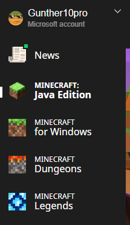
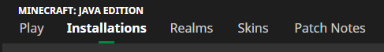
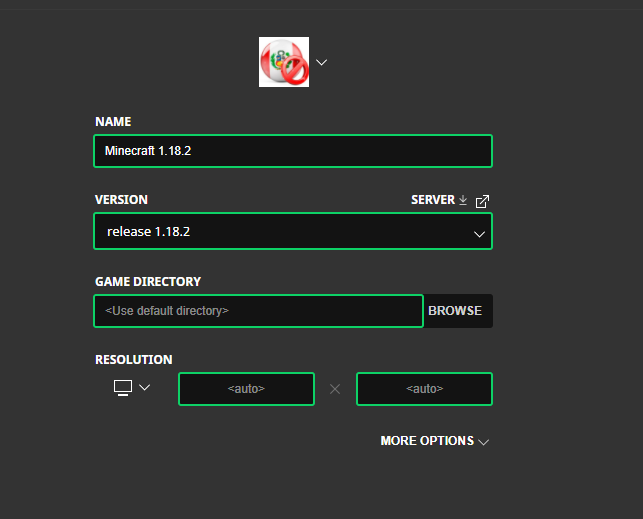
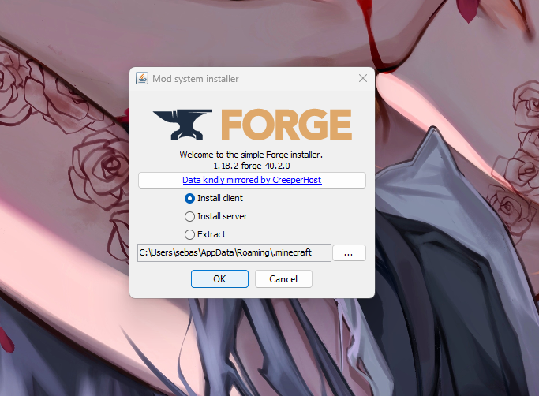
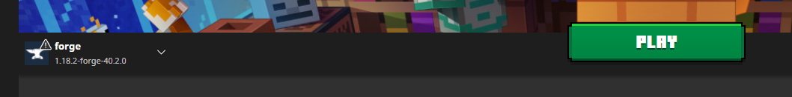
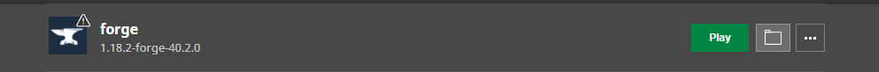
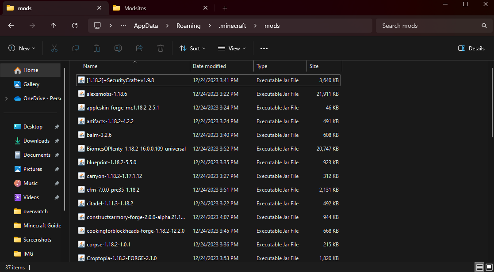
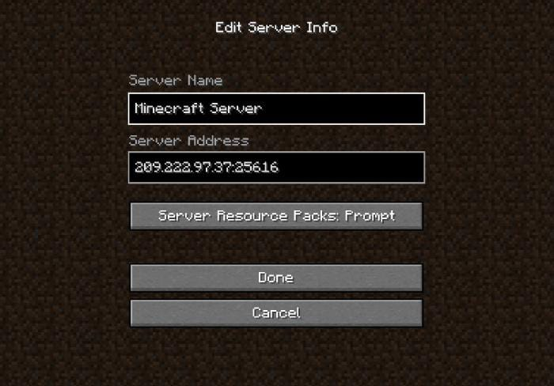

INSTALL MINECRAFT LAUNCHER FROM THE MICROSOFT STORE
1. Open the Microsoft Store
2. Search for Minecraft Launcher
3. Install Minecraft Launcher
4. Open Minecraft Launcher
INSTALL MINECRAFT 1.18.2
1. Go to Minecraft Java section

2. Go to the installations section

3. Go to new installation
4. Install release 1.18.2

5. Open the release 1.18.2 to download all files
6. Close the game and the Minecraft launcher.
DOWNLOAD JAVA
1. Download and install Java
Link to download Java
INSTALL FORGE 1.18.2
1. Download the recommended version of Forge 1.18.2 - 40.2.0
Link to download Forge
2. Don't forget to skip the ads
3. Open the Forge file
4. Install the Forge client

DOWNLOAD MINECRAFT MODS
1. Download mods from Google Drive
Link to download Mods
3. Unrar the folder "Modsitos".
YOU NEED RAR TO DO THIS
INSTALL MODS IN FORGE 1.18.2
1. Open Minecraft launcher
2. Open the Forge installation

3. When it opens, close the game
4. Go to the installations and the folder

5. Look for the mods folder
6. Copy all the mods to the Minecraft mods folder.

READY! OPEN THE MINECRAFT FORGE INSTALLATION TO PLAY MINECRAFT
1. When the game starts go to multiplayer
2. Add a new server

4. Have fun